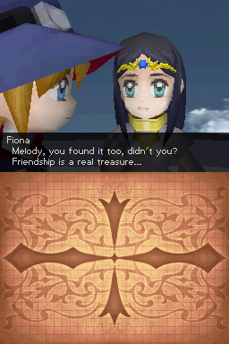
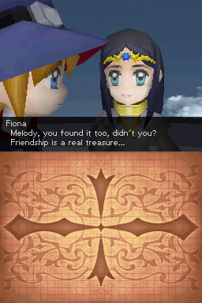

Nostalgia

Complete on 2022-07-26
4 / 5
Release Date: Oct 23, 2009
Meta Score: 72
Screenshots
 

Notes
Nostalgia plays it extremely straight, everything you expect from a classic JRPG. The combat system is a straightforward turn-based affair, gets the job done. The first quest is literally "go kill rats in the sewer to join the adventurer's guild".
There is a moderate level of character customisation (something I look for in JRPGs). Each character has a pretty set role based on their stats and available skills. However you do get to pick skills from a skill tree for some customisation and you get to equip 2 "gadgets" on each character which have significant effects.
Good graphics (for DS 3D at least).
The world map is cool and probably the most unique feature. You fly around on your airship right from the start of the game. Airship combat works slightly differently to normal combat. There's a nice sense of exploration and you're actually exploring the real earth with somewhat real geography.
The setting is a steampunk victorian-ish era. Airships galore. It has kind of an Indiana Jones feel, although tempered by a certain level of generic JRPG flavour.
Game isn't too hard generally. There are also save points in dungeons which restore your health/mana which is nice. The one point of contention was airship fights. You have the ability to change between altitude "layers" (low/mid/high) and the difficulty of enemies on higher layers is very high when you first unlock them. I don't think I was bad or underlevelled because I had no trouble with story-triggered airship fights. But I really had to minimize time in the higher layers (which you need to go through to pass over mountains in some areas of the map) for a lot of the game or risk getting blown away by random battles.
Seriously the airship balance is so bad when you first unlock a new layer. Like "the enemies in the new layer will murder you and it's impossible to escape from battles" bad. The airship also doesn't really level up like your characters, it only gets appreciably stronger with new equipment so you have to progress through the game significantly to unlock new stuff before you stop getting stomped. The rest of the game is so pathetically easy that this one part of the game feels like a real shock. Then you get into a story scripted airship battle and you're back to oneshotting things...
Actually I think the game might be too easy. I used the obvious combination of the main character's first 2 learned abilities: Boost Attack Power for several turns + do a multi-hit attack. This did a ton of damage and one or two shot bosses for a significant portion of the game. In general it felt like I was walking through without doing much in the way of grinding or sidequesting. I think I prefer "too easy" over "obnoxiously hard", but they didn't get that close to a good balance here.
The difficulty does peek up slightly towards the end but not terribly so. It was offset for me when I realised how busted delaying the enemy's turn combined with doubling up turns on my biggest damage dealer (which by the way was still the first character using the first attack up + multihit attack combo from the very beginning of the game).
The game starts to feel a bit thin in the second half or so. The plot becomes "find the 7 mcguffins" and there is a lot of reskinned enemies, with very little challenge present.
Overall this is a nice, fairly fun JRPG. The biggest problem is that it doesn't really stand out in any single area or have much that's unique or original going on. It's the most 7/10 game I've ever played. Still had fun with it generally.